Answers to your questions
- Yes I would say breaking down into approach, curve, penultimate, take off and flight makes sense
- I would say the most important measures which influence how high you jump will be
- Speed at takeoff (maybe measure speed between penultimate stride and takeoff stride)
- Ground contact time takeoff foot
- Body angle at takeoff
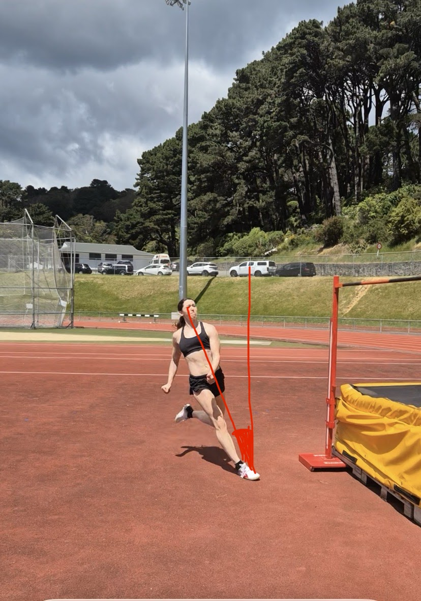
- Body in straight line at takeoff
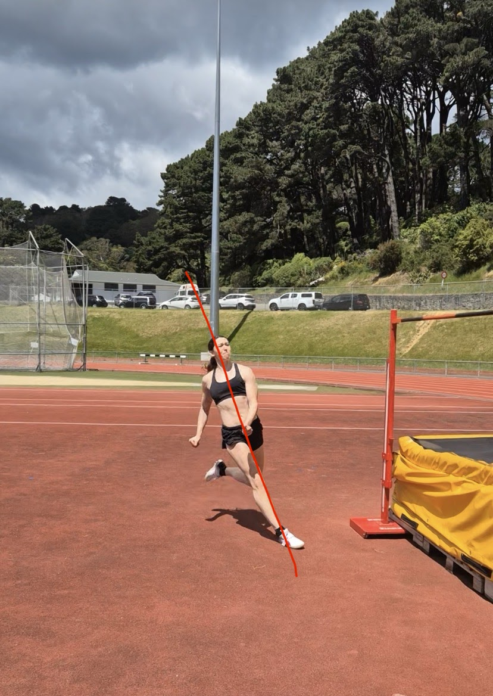
Other things at takeoff:
- Takeoff foot angle to the mat
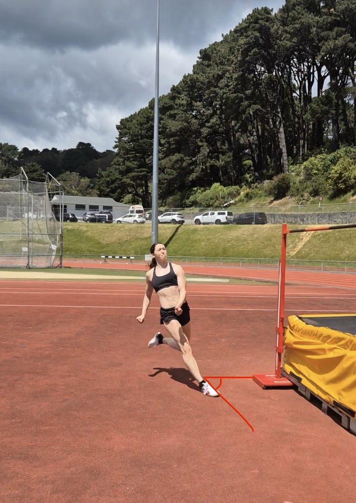
- Speed and timing of arms driving
- Speed and timing of knee (non-takeoff leg) drive
Things which I might work on throughout the approach/curve which will influence the takeoff
- Rate of acceleration/rhythm of the run up
- Stride length (all strides)
- Ground contact time all strides
- Hip position (foot striking under hip) every stride
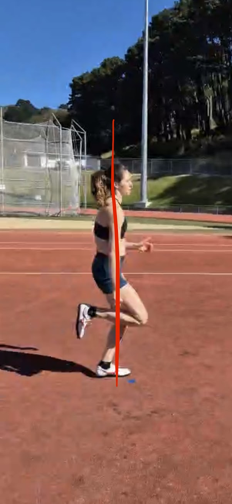
- Where the curve starts in the approach and radius of the curve
- Each stride on the line of the curve
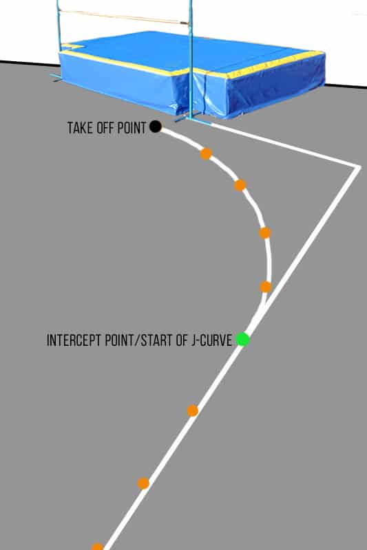
- Body angle and in straight line on the curve
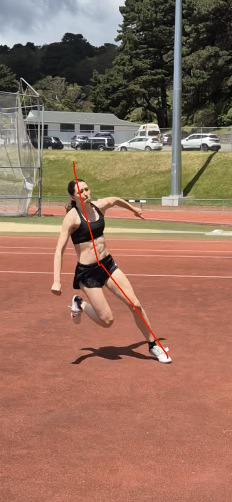
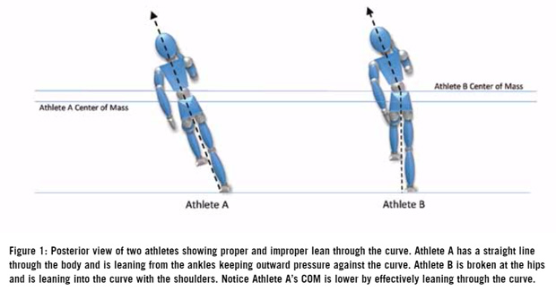
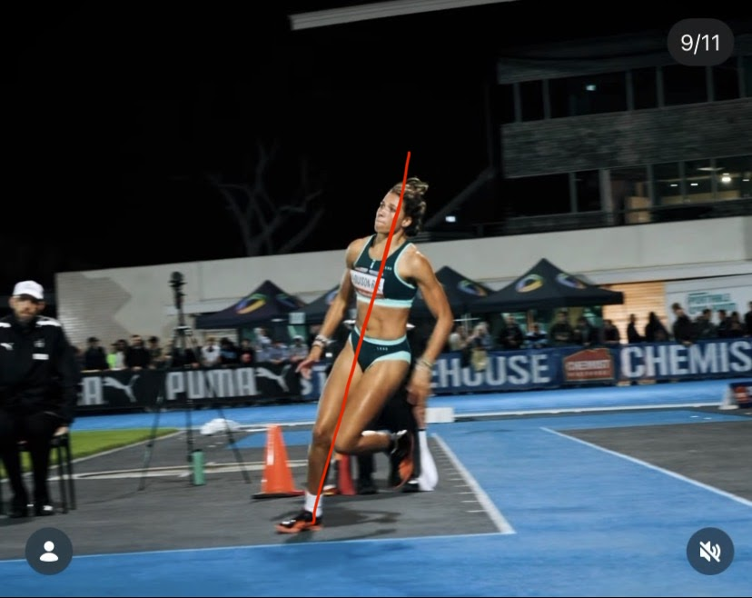
- Point of contact all strides (e.g. toes, flat foot, heel, particularly on penultimate and last strides)
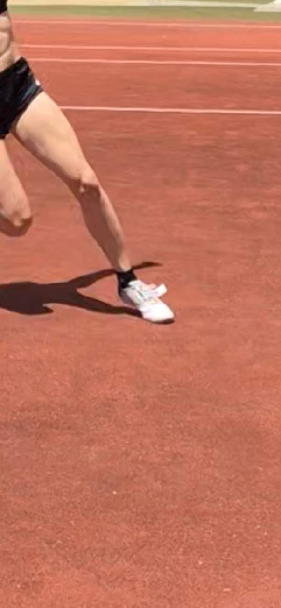
Toe contact vs flat foot.
- Arm positions on the curve (e.g. I have a habit of swinging my arm out to the side which can throw off my body position)
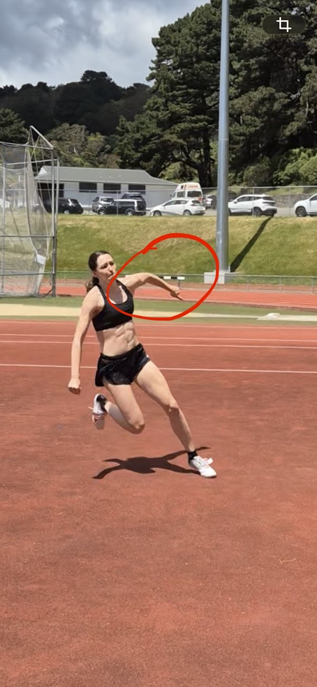
The main thing I would work on in the flight is the amount of time extending vertically off the ground with knee driving up before dropping knee and head to go over the bar.
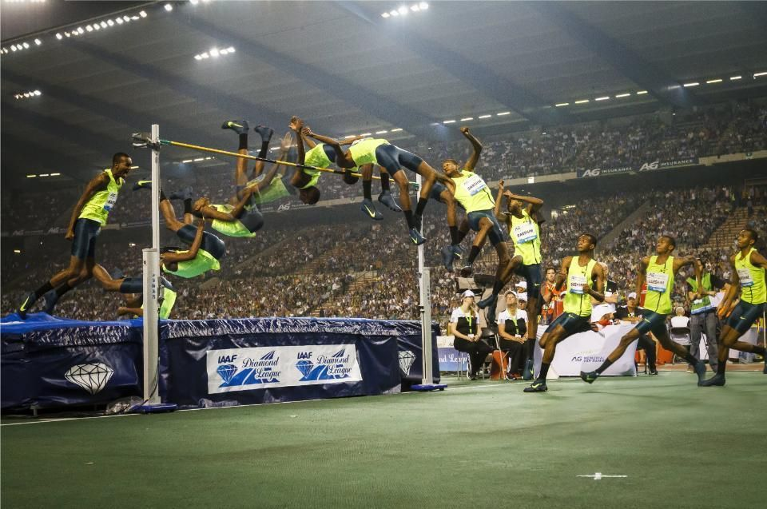
This shows really well the switch between the position where you’re still driving the knee and head is up, to then dropping the knee and head and pushing hips up.
3. No CMJ not most accurate to HJ.
Box drop jump, particularly a single leg one would be the most accurate and this is what we test.
4. Don’t know much about the best body model, that’s probably fine for now?
5. In addition to the joint movements you’ve already put I would add hip abduction and adduction
6. Physiological variables, won’t necessarily be able to account for all of these but just a list of what I can think of:
- Muscle fibre composition
- Body composition
- Muscle fatigue (throughout the session and also as a result of previous days training)
- Injury
- General fatigue/ health/ sleep etc. (can be tracked through heart rate or heart rate variability for people who wear heart rate monitors)
- Temperature and weather conditions e.g. if it’s very windy or rainy
- Menstrual cycle
7.
Protocol:
- I already have a standard warm up that I do consistently
- Typically jump twice per week and in a session would do 8-12 jumps
- Rest times are not standardised but in a competition it can be very variable times between jumps so it’s better to practise not having the exact same rest time. Could have anywhere between 2 mins - 15 mins between jumps.
- I don’t think time of day makes a huge difference, the biggest difference would be the training I’ve done leading up to the jump day
In terms of the output, as we discussed, what would be most helpful would be that the program can work out an optimal high jump based on my biomechanic capacity. So it can work out what is the best length of the approach and radius of the curve in the run up, where my body positions should be at every stage of the run up and the optimal speed and contact time etc. and then from there it is able to point out from a video where I am deviating from the optimal. So it might give me an output such as, 5th stride was too short, third stride foot stepped off the curve/ body not in straight line, foot contact time on penultimate stride was too long.
Measurements
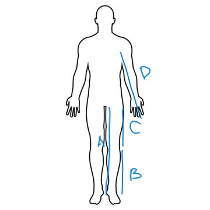
Height: 1.78m
Weight: 67kg
A: 90cm
B: 47cm
C: 43cm
D: 68cm